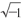

摘要：逻辑的迷宫。伤口和膏药。再也不会。
昨天我刚躺下便坠入了梦的海底，就像一艘被浪打翻了的超载的船。四周是安静的漫无边际的绿色海水。我从海底缓缓浮了上来。等我浮上水面，定睛一看，这是我的房间，正好是凝固的绿色的早晨。玻璃镜柜子的门上有一块太阳的光斑，被玻璃直接反射进我的眼睛里，这让我没有办法按照行为规范完成睡眠时间。要是能把柜子门拉开就好了。但我整个人好像被捆在蜘蛛网里面，甚至连眼睛也被蒙上了蜘蛛网，我四肢无力，动弹不得……
最后，我还是挣扎着起床了，把柜门拉开，门口居然出现了一个全身粉红的I-330，正在把身上的衣裙往下拽。我已经对这种极其古怪的事情习以为常了，我记得我当时甚至都毫不惊讶，也什么都没问就赶忙钻进柜子，砰的一声把柜子门关了起来。我喘着粗气，手忙脚乱地跟I-330结合了。现在我还记得，在黑暗中透过柜子的门缝，我看见一道耀眼的太阳光，像闪电一样曲曲折折地照射在了地板上、柜子上，接着这道像刀刃一般尖利的光束落在了I-330向后仰着的裸露的脖颈上……我大惊失色，忍不住大叫了起来——我再一次睁开了眼睛。
我还是在房间里。还是这凝固的绿色的早晨。柜门上还是有一块光斑。我在床上躺着。是个梦。但是我的心脏还是剧烈地跳动着，颤动着，震荡着。我的指尖和膝盖有些许酸痛。这件事毫无疑问肯定发生过。但是我现在不知道什么是梦境，什么是现实。无理数出现在了稳固的、习以为常的三维世界中，原来坚实平滑的表面开始变得弯曲、毛糙……
离起床铃还早，我躺在床上思考，一种极其奇怪的逻辑推理开始在我脑中形成。
曲线和物体在平面的世界中都对应着方程式和公式。对于所有的无理数公式，这其中也包括我的无理数，我们却都不知道对应的物体，我们不曾见过他们……但可怕的是，这些未曾见过的物体是存在的，我们不能回避他们的存在，因为在数学的世界里，就像在显示屏幕一样，我们看到过他们奇怪的、带刺的影子——无理数公式。数学和死亡从不会出错。如果说在我们的世界，平面的世界，我们看不到这些公式对应的物体，平面空间之外，必然存在一个完整的巨大的世界。
我没等起床铃响就跳下了床，在屋里急促地来回走着。到今天为止，数学是我已经疯狂了的生活中唯一坚实的、颠扑不破的安全岛，现在它也松动了，漂浮了，旋转了起来。这该死的灵魂究竟是什么？它和我的制服、靴子一样实实在在吗？虽然现在我看不见它们（它们在柜子的门后面）。如果靴子不是病，那为什么灵魂是病呢？
我寻找着，却在这逻辑的泥沼中一无所获。这是我不曾见过的、惊险异常的密林，就像绿色巨墙外面那些奇奇怪怪的生灵一样，那些神秘莫测，不用语言说话的生灵们。我似乎能感觉到，穿过厚厚的玻璃，我能看到一个无限大却又无限小的，它长得像蝎子一般，藏着一根能被你感觉到的带负号的尖刺……有可能，这不是什么其他的东西，就是我的灵魂。就像古人传说的蝎子一样，心甘情愿蜇死自己，为了……
起床铃响了。白天。所有的东西都没有死亡，也没有消失，它们只是被白天的光芒覆盖，就像白天被我们所看到的东西一样，在夜里并没有死亡，只是披上了夜晚的黑色。我的脑袋里烟雾缭绕，穿过雾气，我看见一张张长玻璃桌和一个个沉默不语的圆脑袋，正慢条斯理地吃着什么。从远处穿过烟雾传来熟悉亲切的滴答声，在这滴答声中我和其他人一起数了50下。50在大一统国是咀嚼一块食物的标准次数。之后，我伴着机械的节拍踏步下楼，和所有人一样在外出人员花名册上自己的名字后面做个记号。但是我觉得我跟大家格格不入，我独自一人。一面隔音的软墙将我与其他人隔开，墙内就是我的世界。
但是如果这个世界是我一个人的，我又何苦浪费笔墨写这些笔记呢？何必写下那些荒唐的梦、柜子和没有尽头的长廊呢？我感到很遗憾，我没有能够写出歌颂大一统国的诗韵严谨的数学诗篇，反而写了一本充满幻想的冒险小说。唉，要是它真的是一部小说，而不是我那充满X和的堕落的现实生活就好了。
不过这一切或许会朝着好的方向发展也不一定。我未曾见过的读者们，很明显，跟我们相比，你们不过是儿童的水平罢了（因为在大一统国家的哺育下，我们已经达到了人类所能达到的最高水平）。因为你们像儿童一样，所以你们才能不哭不闹地吞下这枚裹着厚厚冒险小说糖衣的苦药……
傍晚
你们对这样的感觉熟悉吗？当你们随着飞船在碧蓝的天空中飞驰，从舷窗迎面吹来呼啸的狂风的时候，大地消失在你们的世界之中，你们也将它遗忘，地球这时就像土星、木星和金星一样，离你无比遥远。我现在的生活状态就是这样，狂风迎面而来，我忘记了大地，我忘记了可爱的、粉色的O-90.但是大地依然存在着，或早或晚我会在大地上降落。现在我只是对着那张登记着O名字的性生活表熟视无睹罢了……
今天晚上，遥远的大地向我提醒了它的存在。
为了完成医生的嘱咐（我发自肺腑地地想要恢复健康），我在直线形的空无一人的玻璃大街上散了整整两小时的步，遵照行为规范，其他人都在课室里坐着，只有我一个人……从本质上来讲，这是非正常现象。你们想象一下，一根手掌上切下来的手指，孤零零地弯着身子，在玻璃大街上又跳又跑，这是多么奇怪的现象啊。而这根手指，就是我。更加奇怪，更加反常的是，这根手指完全不想跟其他手指一起待在手掌上。或者就这样一个人，或者……唉，反正我也没有什么隐瞒的必要了，或者跟那个她在一起，通过她的肩膀，通过我们十指相扣的手掌，和她完全融合在一起……
我回到家的时候，太阳已经落山了。傍晚玫瑰色的晚霞照在玻璃墙壁上，照在蓄电塔的金色塔尖上，照在迎面走来的号码们的笑容上和声音里。真是奇怪，这燃烧殆尽的阳光和早上冉冉升起的阳光的角度完全一样。但除此之外的一切却完全不同，连同是玫瑰色的霞光也大不一样。晚霞安静而苦涩，朝霞却是响亮又悦耳的。
楼下的大厅里，值班员Ю从一堆玫瑰色的信封中翻找出来一封给我。我再重复一次，这是一位非常受人尊敬的女性，我也相信她对我的感觉是非常友好的。
但是，每当看见她鱼鳃一样下垂的脸颊，我就感到极为不悦。
Ю用瘦骨嶙峋的手把信递给我，然后叹了一口气。这一声叹息轻轻拂动了隔在我和这个世界之间的帷幕，因为当时我全部注意力都集中在这封信上了，我确信这封信是I-330写的。
这时她发出了第二声叹息，声音有两道明显的强调线，使我不得不把目光从信封转移到她身上，我看到在两边鱼鳃之间，通过她害羞低垂的眼睑传递出了一个温柔的、让人晕眩的、如膏药般熨帖的微笑。接着她说：“您真可怜，您真是一个可怜的人啊。”接着又叹了一口气，这次加了三道强调线。她朝信封微微点了一下头（她当然是知道信的内容的，这是她的义务）。
“不，确实，我……但为什么呢？”
“不，不，亲爱的，我比您更了解您自己。我已经观察您很久了。我发现您需要一个有生活阅历的人跟您携手共度人生啊……”
我觉得她的微笑已经贴满了我的全身。这些微笑都是用来治疗伤口的，而这些创伤会来自我颤抖着握在手中的信。最后，她透过腼腆的眼睑，悄悄说道：“容我再想一想，亲爱的，我再想一想。您尽请放心，如果我感觉自己的勇气足够强大的话，不，不，首先我还是应该好好想一下……”
我伟大的施恩主啊！难道我命中注定……难道她想对我说……
我头晕目眩，眼前仿佛有好几千根心弦曲线，握在手中的信简直就要跳出来了。我往墙边走了走，那里亮堂一些。阳光渐渐黯淡下来，深红色的、悲戚戚的霞光洒在了我身上、地板上、我的手和我手中的信上，那颜色愈来愈浓。
我拆开信封，先看看落款是谁，我受伤了，这封信不是I写的，是O……在信纸右下方还有一个化开的墨渍，为什么在这里滴了一滴墨水，这对于我来说又是一道伤口。我受不了墨渍，不管这墨渍的来源是墨水还是别的什么，我都难以忍受。我知道，以前我看见墨渍，只会觉得不高兴。但今天这团发乌的墨渍却像一团乌云，而且正在变得越来越重，越来越厚，这是为什么？或许这又是灵魂在作祟？
您知道……或许，您不知道——我现在连信也没法好好写了，我不管了。您知道吗，没有您我一天也活不下去，我的世界里再也没有早晨，没有春天了。因为R于我来讲只是……好吧，这些对您来说也不重要。但是我还是对他抱着感恩的态度的，因为这些天如果没有他，我还真不知道……这几天我度日如年，一瞬间，仿佛十年，哦，不，二十年光阴已经离我而去。我的房间仿佛也不再是四边形的了，它变成了一个圆，一个没有尽头的圆，我绕着它走了一圈又一圈，都是一个样，找不到门。
我不能没有您，因为我爱您。我看见了，我也明白，这个世界上除了那个女人，另外一个女人，您谁也不需要。您知道，正因为我爱您，所以我应该……
我还需要两三天来把碎裂的我粘合起来，多多少少能像过去的O-90.之后我就会自己去提交申请，取消我对您的登记。这样您应该会好受一些，您会觉得心里更舒坦。我以后不会去找您了，请您原谅我。
不再来了。这样，当然更好，她的决定是正确的。但是为什么，为什么……